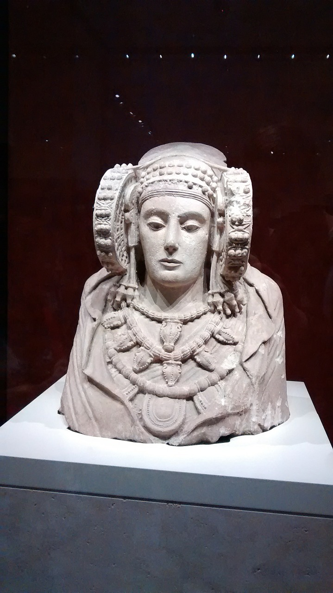

The person depicted is a woman who may have idealistic features, wearing solemn clothes and jewelry. On the back of the sculpture there is a cavity whose function is unknown, the most common assumption is that it is used to introduce sacred objects, relics or ashes as an offering to the dead. There is also a hole in the back for other Iberian religious sculptures found elsewhere.

This work is a sculpture with many hidden mysteries, it is still unknown if this bust represents a goddess, a priestess or a lady of high social status. Whether this work was originally a bust or part of a standing figure, it has been a controversial topic.

The woman depicted is dressed in beautiful clothing and wears a headdress consisting of a pointed crown, the headdress is covered with a veil, and there is a strap on top that connects the two side bows to form a face. Her back and shoulders were covered with a cloak, which was wrinkled at the front, exposing three necklaces with amphorae and charms. The earrings that hang on both sides of the face consist of a plaque and a fake and a small fibula that closes the tunic at the neckline. As some relics have been found in the sculpture, people know that it is rich in colors, with red, blue and yellow hues, and applied gold flakes, there are hardly any relics in it.